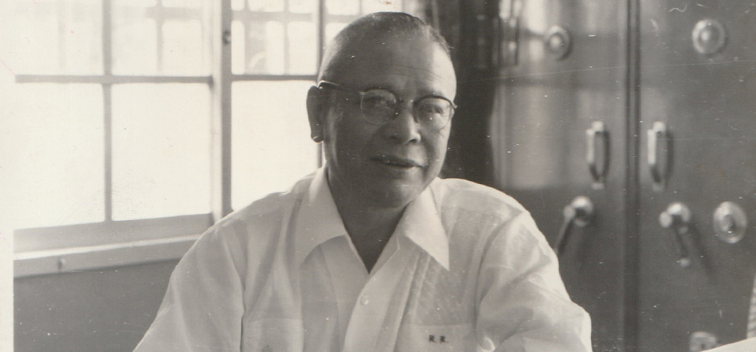
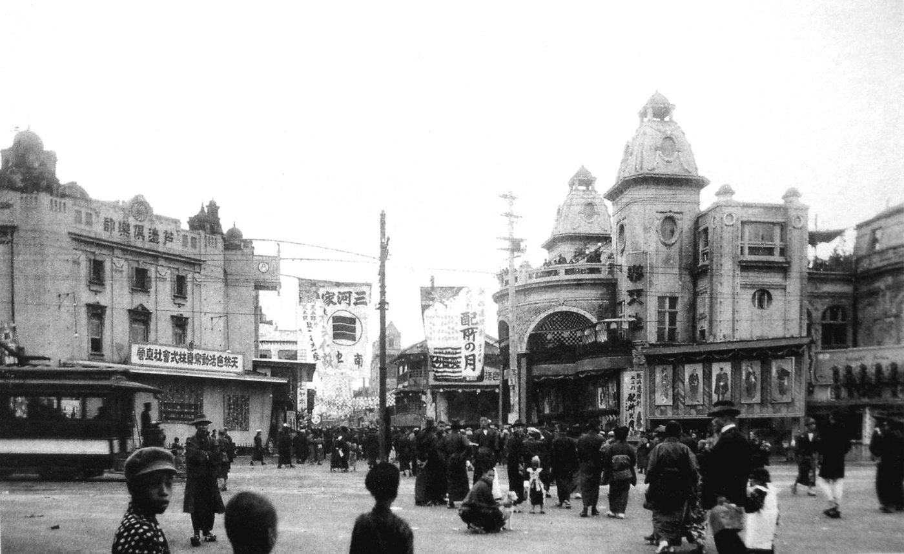
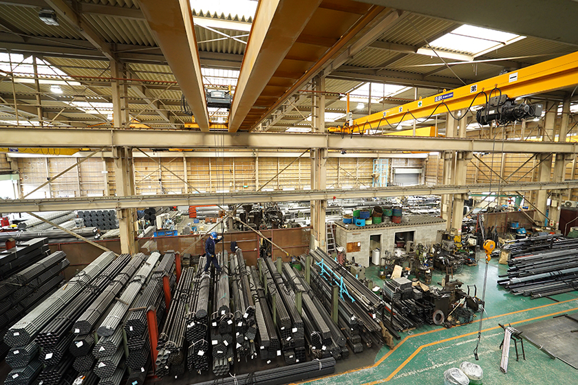
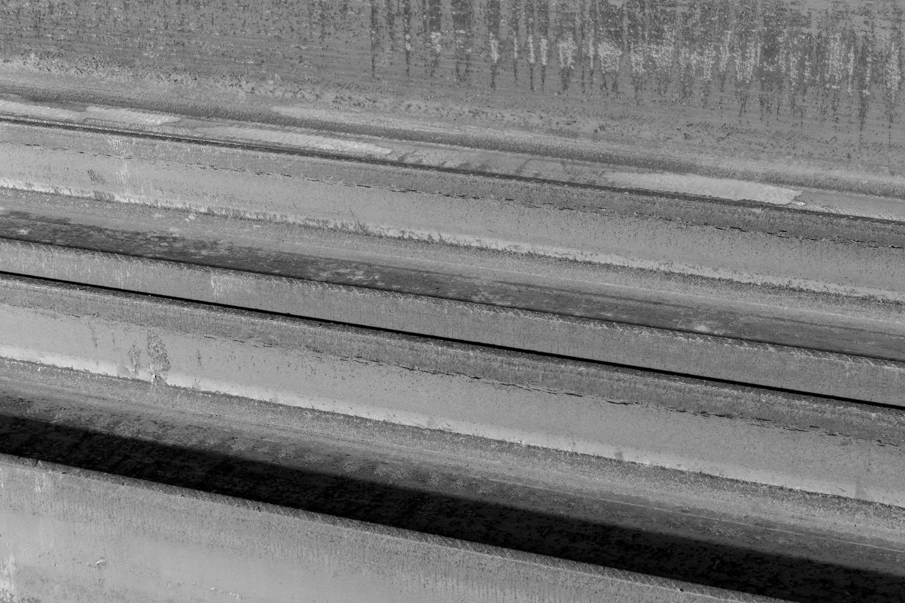
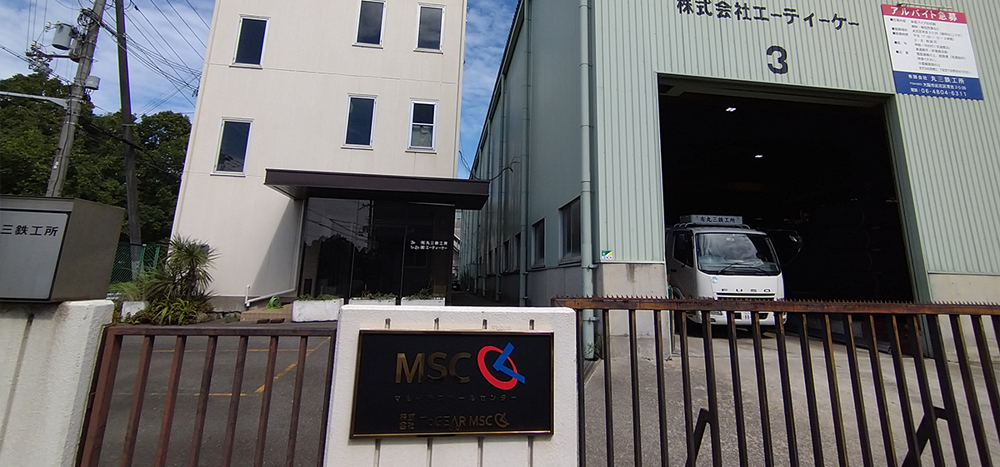

大阪放送株式会社の前身「丸一興産株式会社」は、1945年、大阪の鐵の会社として創業しました。立売堀、堺三宝、江戸堀、そして北港常吉へ。事業の地を移しながら、80年にわたって鐵とその合金の加工・流通に従事し、不動産賃貸とあわせて、確かな土台を築いてきました。
その私たちが、ひとつの放送局と出会います。〈ラジオ大阪（OBC）〉——1958年開局、大阪の電波を半世紀以上にわたって支えてきた、公共性のある放送局です。時代が大きく移りゆくなかで、この放送局もまた、次の時代へ向けた新たな体制を必要としていました。長く受け継がれてきた電波を、未来へつないでいきたい。私たちは、ただ出資して見守るのではなく、自ら一員として現場に入り、ともに次の時代を築くと決めました。
2026年、私たちは商号を旧社名「大阪放送株式会社」へと改めます。これは、ただの社名変更ではありません。80年の祖業の看板を、放送の名に掛け替える——ラジオ大阪と一蓮托生で歩む、という覚悟の証です。
そして私たちは、この放送局を「コンテンツIPスタジオ」へと変えていきます。電波に乗せて流れ、消えていく番組から、つくるほどに資産として積み上がるコンテンツへ。ラジオを発端に、長く愛され、残り続けるIPを生み出していく——それが、私たちの描くラジオの新しいあり方です。
その挑戦を、私たちはまず足元から始めました。〈ラジオ大阪〉の現場から経理、そして番組づくりまで、自らの手でAI化したのです。「古い組織ほど、AIで大きく変わる」——80年つちかった“信用”を土台に得たこの確信は、いまや企業のAI/DX変革という、私たちの新たな中核事業になっています。
鐵から、放送、そしてAIへ。事業の姿は変えても、大阪とともにあり、守るべきものは何があっても守り抜く——私たちの根は、変わりません。
沿革
| 1945年10月1日 | 丸一商会 として創業 創業社長 加藤源太郎（雄己） |
|---|---|
| 1948年12月17日 | 丸一興産株式會社 として法人成り |
| 1979年 | 社長（二代目） 加藤勝弘 |
| 2003年 | 社長（三代目） 加藤昌孝 |
| 2017年 | 社長（四代目） 加藤順彦 |
創業者・加藤源太郎——3分でわかる生涯
明治39年、兵庫県豊岡市に生まれる。15歳で大阪の鉄商・北島安太郎商店に入り、鉄の世界に足を踏み入れた。20年にわたり北島のもとで鍛えられ、洞察力と度胸、そして義理堅さで頭角を現す。
終戦翌月の1945年10月、39歳で独立。机ひとつから始めた加藤商店を、やがて丸一興産として法人化。高度成長期に急成長を遂げ、関西の鉄鋼特約店界で重鎮として確固たる地位を築いた。創業以来、一度も赤字を出さなかった。
厳格でありながら社員を家族のように遇し、落魄した恩人・北島安太郎の面倒を30年にわたって見続けた。その報恩の姿勢は、知る人の間で「美談」として語り継がれている。
1979年、73歳で現役社長のまま逝去。その事業は息子・勝弘、孫・昌孝、そして現代表・順彦へと受け継がれ、80年の時を経て、いま「大阪放送」として新たな章を刻んでいる。
創業時の記録
丸一興産は創業者 加藤源太郎（通名：雄己）によって、その礎が築かれました。
源太郎の死後、1980年4月15日発行の「鐵鋼春秋 春季号」の１４ページから１８ページに残される 明治・大正・昭和にわたる鉄鋼問屋変遷史（２０５）の中に、その評伝がまとめられております。これを著者の許諾を得て転記させていただきます。ご笑覧くださいませ。
抜群の声威挙げた加藤源太郎 特異なカリスマ的生涯を貫く

器量に勝れ資性恭倹
戦後十数年を経た高度成長期に、めざましく頭角を現しつつ、終始隠然として関西の鉄鋼特約店界で重鎮的に存在した丸一興産株式会社創業者・加藤源太郎（通名＝雄己 かつみ）は客蝋六日一朝泊然と現役社長のまま長逝した。胆嚢癌。ときに七十三才。その永眠の報を知り、かれの人柄と業績をしのび歎惜の声がとみに多かった。
敗戦後の混乱時代に身を起し、その一業を成して抜群の優良企業を築いた声威を得ても、かれ自身は明敏な能力も堅忍不屈の意力も敢て外に表わさず、極めて資性恭倹。求めずして世の信頼を得、知る者をして心底より敬意を抱かせ、剛胆にして緻密、器量に勝れた。そして一面、若い頃から事物に対し呪術的に認識、予知、選択し、強烈に自我を通すという意外なカリスマ（神秘と不可知性の中に超人的な可能性を示唆する非日常的なものとみなされたある人物の資質）的な生きかたを貫いた特異性があった。以下源太郎の興味深い人為（ひととなり）とその軌跡を探ってみよう。
源太郎は明治三十九年元旦に山陰の主要商業都市・兵庫県豊岡市の小尾崎八番地で、父恒蔵、母カメの長男として出生した。父の恒蔵は若い頃は代用教員をし、傍ら選挙運動に熱中するほど政治や経済に凝るといった理想主義派で、善人過ぎたため、減いつの家庭経済などとアンバランスな面があった。母のカメは優しく従順な女性で、外面は良いが内には厳しい夫に耐えてよく尽くした。父は現実離れした夢を追うタイプに共通する礼儀、作法、躾には非常に厳格かと思うと、保証人でも何んでも人にものを頼まれると嫌とは云わず、その為によく失敗もした。
この父母も数年後に源太郎の妹光子が生れると、間もなく小間物など日用品商を営むために、幼い源太郎兄妹を祖母とよに養育を頼み、大阪の天王寺区六万台町に出てしまった。源太郎らの養育費は父の姉が大阪・業平町の金本鋳造所に嫁ぎ、当時（明治末期）のブルジョア階級であったところから、毎月相当に仕送りが有った。祖母は髪結もし、温厚な良い人であったから、変則的な家庭環境であったが兄妹はのんびりと育つ。源太郎晩年の“丸味”はこの幼少期にうけた祖母の感化では．．．と後に大阪で生れ七才頃に父母と豊岡に移った弟の博（通名＝順巳 としみ、現丸一興産会長）はいう。
この博が六才のとき両親が日用品店の失敗によって豊岡で洋服屋をするために帰郷するのと、源太郎が豊岡商業高校（当時乙種）を第一期に卒業して、大阪の鉄商・北島安太郎商店に入店するのと入れ違いになる。従って源太郎は後に、あびこで世帯を持って落ち着いた三十才ごろに両親を呼び寄せるまでは、親と一緒に活したことは幼時の数年間に過ぎず、弟の博とも遂に離れ離れであった。

商卒後北島商店に
源太郎が北島に入店、鉄の世界に足を踏み入れた動機は、かれが故人であり、既に両親も妹も亡く、弟の博は源太郎より九才も年下であったために不詳であるが、ときに大正九年四月、源太郎は僅か十五才の少年であった。
北島安太郎商店は西区西長堀南通（問屋橋より西二軒目）に店を構え東に吉村商店、その向かいに沖野商店などがあり、隣り近所は材木屋が多かった。
その時期は大正四～七年の第一次世界大戦による軍需黄金景気のあとで、急速に不況化を濃くし、昭和初期の金融恐慌～満州・支那事変に連なる経済低迷時代を歩んでいた。
源太郎が入店した頃の北島安太郎商店は、主人の北島が吉村玉吉商店（船場瓦町一丁目、のち西長堀二丁目）に同郷の多田藤吉の口利きで丁稚奉公し、十五年勤め上げ（明治三十六年～大正六年）て独立、数年の間に大戦ブームで大きく儲けて基盤を築いたあとの草創期かつ、それからの長期不況に直面した試練のときであった。
源太郎の大正九年から昭和十五年に至る北島商店時代については、当人物故と、今では当時を知る人が皆無にひとしいために不詳であり、北島安太郎に関る資料からみて、その二十年にわたる投影を推察するほかはない。その主要点は次の通りである。
- 北島安太郎は物事に非常に厳格で、昭和十二年頃に花屋敷に家を造る迄は西長堀の店舗に住込み店員と同居し、店員は夕刻仕事が終っても、北島が晩飯を喰って出ていくかやすむまで、九時でも十時まででも習字その他の勉強をする仕来りになっていた。またほぼ同時期に津田勝五郎商店から独立、厳しくて人格者であった芝本秀三郎を兄事し、深くつきあった。
- 北島の実弟繁一はかなり派手な性格で、対人折衝も巧みであったが、道楽も激しかった。この繁一ものちに筆頭の番頭（板担当）になり、性格の対照的な源太郎が昭和五年、六年ごろに三番目の番頭（型担当）になっている。（二番番頭（丸鉄担当）山本寛治、四番番頭（線材担当）朝倉康一）。
- 未曾有の大戦ブームが去ったあともその反動を無事にくぐり抜け、北島商店は順調に繁栄し、昭和初期には、三井、三菱、岩井、安宅（指定商）、ヨロト、津田、カネヒラ、岸本、岡谷（問屋）らに次ぐ芝本、吉村、井上、村岡、千葉、森下など有力販売業者に肩を並べるに至ったが、その間に北島が緊密な関係をもった鶴間正祐（井上長太夫の親友で、シャー業近代化を導いた傑物）と互いに協力し、昭和七年に尼崎市大浜に薄板工場「大阪製鈑株式会社」を設立、鶴間が専務に北島が社長に就任した。
ところが卓越した才能の鶴間が五年後に急性盲腸炎で、五十才未満の働き盛りで卒然と他界してしまい、北島のうけた衝撃は大きく、その後昭和十四年に大阪製鈑も尼崎製鋼に合併、北島の運勢は北島商店の戦時企業整備に従った三和鋼材への衣がえ－日本鉄鋼興業への合体などに流され、落潮を辿った。いわば第一次大戦後の深刻化する不況から脱皮するためのシャーリング業への進出が、北島にとっては不運への曲がり角となった。

洞察力ズバ抜ける
多感な年代であった源太郎は、こうした北島商店時代の体験から、かれなりの事業にも、人生にも、生涯にわたる教訓を学びとったに違いない。昭和十年に北島商店に入店した小野木雅次郎（大建鋼材社長）の回想（談話）も補足してみよう。
「その頃はまだ若いものは北島の名入りの厚子に草履であった。最初は風呂掃除、荷物の受渡。大阪を東と西に分けて判取り貰いなどが主な仕事で、冬の寒いときでも、自転車で北は十三大橋を渡ったり、南は玉造方面まで行ってえらかった。一年位すると倉庫へ行き、在庫管理の仕事に廻った。主に船が着くと鉄板や丸棒の数勘定であった。その頃もう加藤さんは三番目の番頭さんで、背広を着て“源吉どん“と呼ばれていた。頭が切れ、洞察力はズバ抜け、度胸が有って、気性が烈しく、商売上でも理不尽な得意先とはけんかもした。何事によらず徹底せんと気が済まぬ人であった。ただものを仲々云わず、どかっとしていて、呑み込むような眼光でにらむので、”ガマ“と渾名され、坊主連中から恐がられた。何しろ若い頃の加藤さんは丈夫で全然病気をしなかった人で、押し出しがあった･･････」
これが源太郎の三十才頃の壮令期に入ったときである。（適令期の兵役は乙種で免れた模様）それ迄、既にあびこで世帯を持ち（せつ子夫人は源太郎の妹むこの妹）、茨木に自宅を移したときに豊岡の父母を呼び寄せ、父が間もなく五十二才で、母は昭和二十五年、六十五才で没するまで面倒をみる（祖母は豊岡で既に没）。
いま一つ源太郎の生涯にかけ、大きな影響した要素として、二十五、六才のときに宗教団体「慈光会」（川西市西多田－花屋敷の山の上。樫尾空覚教祖－観音さん）に入信したことが重視される。入信のキッカケは、その以前に北島安太郎が熱心な信者であり、その北島が、或る日悩みごとでスランプに陥っていた源太郎を誘って慈光会に同行させたことである。このときの源太郎の悩みごととは、家庭の事とも仕事の事とも今は謎であるが、その後源太郎は主人の北島以上に熱心に観音信仰の道に入り、終生カリスマ的な生き方へ変身したのである。しかし、かれの生真面目で慎重、強烈な好き嫌いと善悪に対す自我、物事の徹底、侠義などの素質はこの信仰以後に強固になった。これらが元来の太っ胆、緻密で明敏な脳力、頑健などと組み合わされて、運勢に恵まれたことが、かれの成功要因とみることができる。
従って源太郎にとって主人の北島安太郎とのかかわりは絆のように固く、その因縁によって戦後、北島が落魄の身となっても、三十年に及び、北島の逝去まで多様特段に面倒をみたことは、知る人の間で人情が敝履のように捨てられた戦後世相にかかわらず報恩の“美談”として賛えられている。

戦後独立、必死で基盤
やがて戦火の時代は第二次大戦へのエスカレート、源太郎は北島商店が千葉金三郎商店、森下弥三八商店との合併会社三和鋼材株式会社の取締役（昭和十六年）から、統制強化に伴って設立された大阪鉄鋼共同配給所へ型鋼課長に出向（同十八年）、これが鉄鋼統制販売株式会社大阪支店に合併の為、同社に入り条鋼課長（同十九年）、更に鉄鋼統制会近畿支部に合併して同社の条鋼課長として勤務（同二十年）したが、九月終戦となり退社－ という四、五年はめまぐるしく統制業務で明け暮れた。
終戦の翌十月、潰滅した日本経済と荒廃混迷した社会情勢下で、源太郎は鉄に生き、鉄に死すべく敢然と独立し加藤商店を開店した。ときに三十二才。昭和二二十五年までは統制が続いたので、思うように売買もできぬ時期でもあり、独立といっても当初一年は日本鉄鋼興業（堂ビル）で机一つを借り、翌年は堀川産業（淀屋橋の大川ビル）の入口の机を借り、三年目にやっと大ビルの屋上に刀根得一と共同で小さなプレハブの事務所を設けて、仲次ぎ程度の域を出なかった。
石の上にも三年。漸く二十三年の暮れに現事務所所在地の西区立売堀南通三丁目十八に木造二階二軒続きの一軒を土地付き（三十坪、坪二千六百円）で入手、同時に丸一興産株式会社（資本金百五十万円）に組織変更し、弟の博も個人的に営んでいた貿易商を併合させ、三分の一出資して経営に参加、源太郎が社長に就任。
このときの陣容は、源太郎が独立して間もなく店員として加わった秋山秀雄（現取締役＝博夫人の妹むこ）と三人であったが、翌二十四年暮れに田中清二（現常務＝博の岡田洋行時代の同僚）が博の口利きで入社している。
その後十年－堅実に着々と基盤を確立、形鋼を主力に一般鋼材の特約店として成長、三十五年より四十二年にかけて高度成長期に巧みに急速発展を遂げ、関西では右翼にのし上る（五十三年度年間販売額七十億三千五百八十五万円－ 今日迄創業以来赤字決算ゼロ）。そして、四十三年十月に、周囲を買収拡張して来た敷地二百六十八坪に、鉄骨三階建（七百三十一坪）の本社ビルを建設し、今日迄の盛業を示唆した。

美味求真に造詣
弟の博、田中清二、友人の林進、木村嘉弘、小野木雅次郎の源太郎観を総合すると凡そ次の通りである。
- 誠実、忍耐、努力を信条とし、北島時代から寡黙であるが深く考察し、ブローカーから戻り口銭をとらず、私的にも酒は飲んだが、キャバレーなど享楽遊情を排し（終生）、高潔であった。
- 戦時中共販会社に入り、一流ユーザーに広く顔をもったことが、独立後の幸運になった。然し本質的には太っ腹で、慎重緻密。人間的魅力があり、適材適所に人を上手に使い人材を育成した。社員に対し共同体的・家族的で、義務、責任を果し、対外的信用を重んじた。また社員の努力には誠実に報いた。
- 大事な取引でも、関係団体でも表面に立たず、一切の名誉職につかなかった。戦略家肌と、根は晦くして外に栄えるという晦養の二面性は単なる地味ということではなく、独自に培った処世方針であった。
ここでカリスマ的な源太郎のエピソードを捨ってみよう。昭和十年ごろ自己の通名を雄巳と称し、弟の博にも「災厄の危険性」が有るから順巳を称えさせている。また創業後は、新規採用は姓名判断で当否を決めて選考した。或は自分の惚れ込んだ人物（三菱の故 寺島雄、中山の故 中山重隆ら）を絶対的に信頼し、主要事を相談した。など。
丸一興産が遂に自社倉庫を設けなかったのも、寺島の不採算に基づく意見に従ったもので、何度も買い物のチャンスを逸らしている。
源太郎の趣味は釣りと麻雀であるが、唯一つの道楽であった「美食」は真の“美味求真”で他に比類を認めず徹底した。特に魚については造詣した。惜しむらくは全くスポーツをせず、晩年は病疾がちであった。
夫人せつ子（六十七才）は慎ましく、情義を重んじる典型的な賢婦で、一男五女を育て上げ、立派に内助の功を果たす。
源太郎没後、昨年末より長男勝弘（関大卒、新東亜交易勤務、丸一興産東京営業所長、専務を経る－四十二才）が後継社長に就任。これから先代の踏襲すべき路線は続け、近代化すべきは必要に応じて改革する姿勢であり、その手腕は注目される。
【鐵鋼春秋 春季号（1980年4月15日発行）より引用】